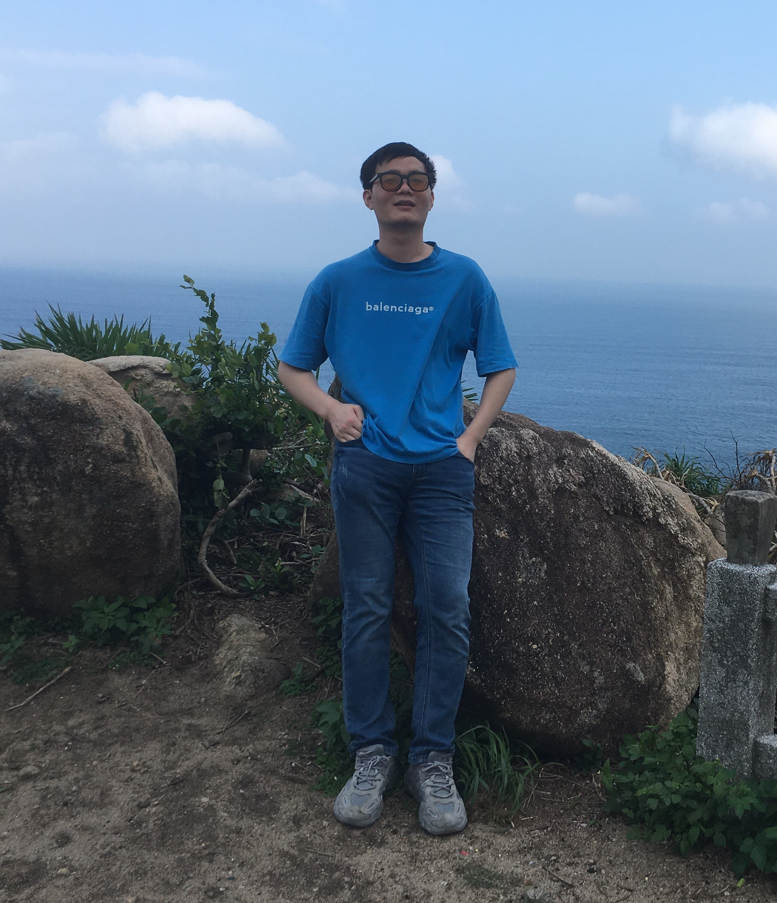
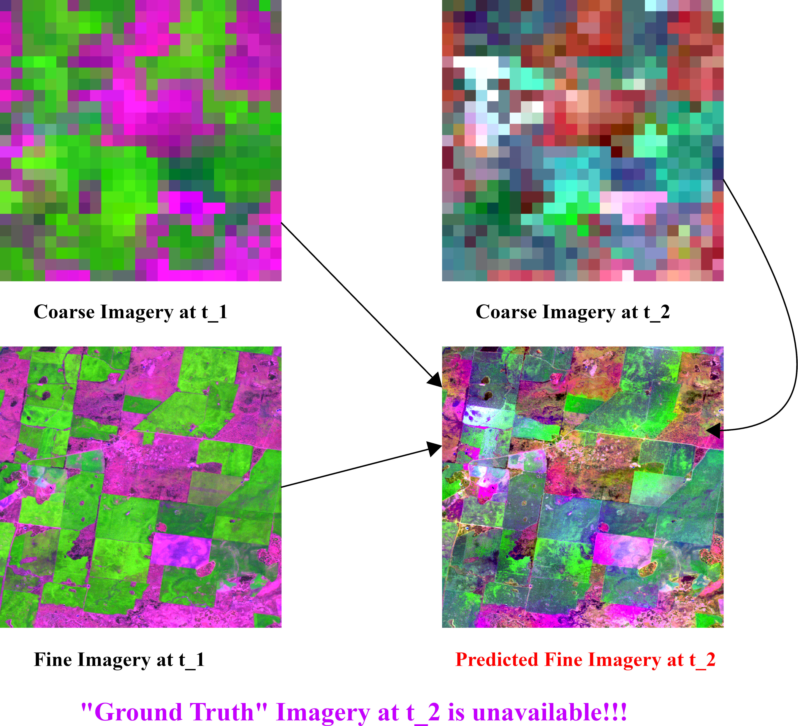
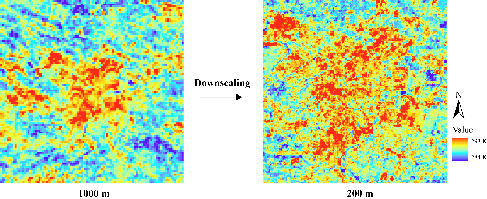
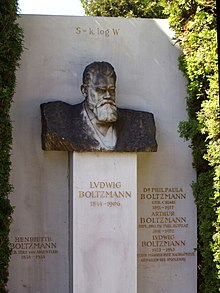
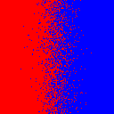
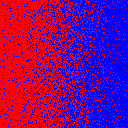
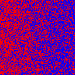
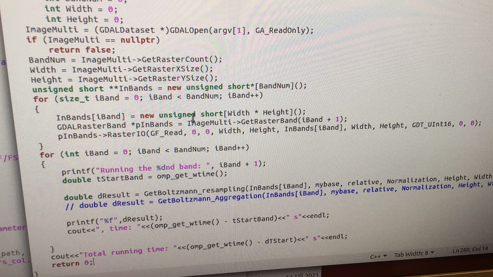
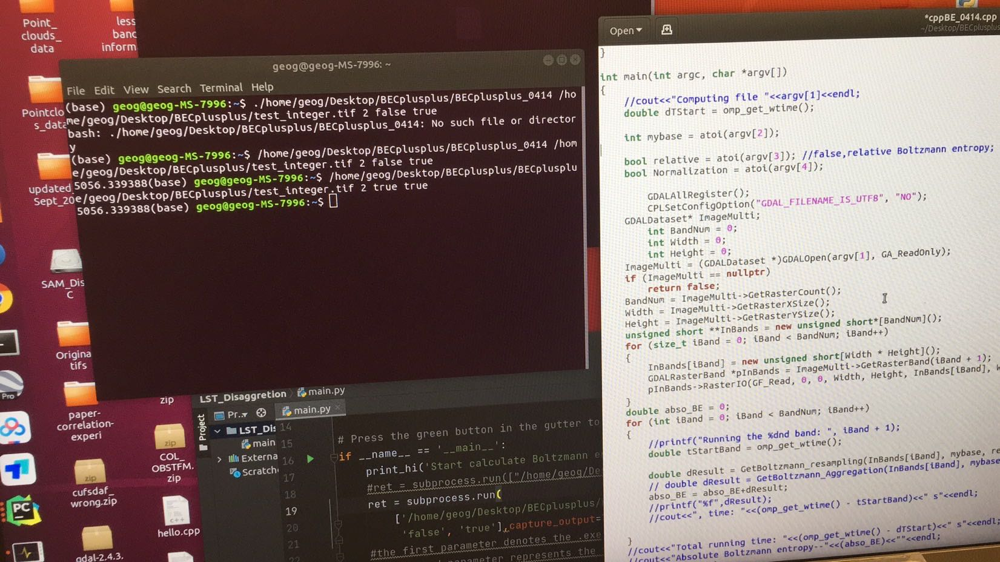
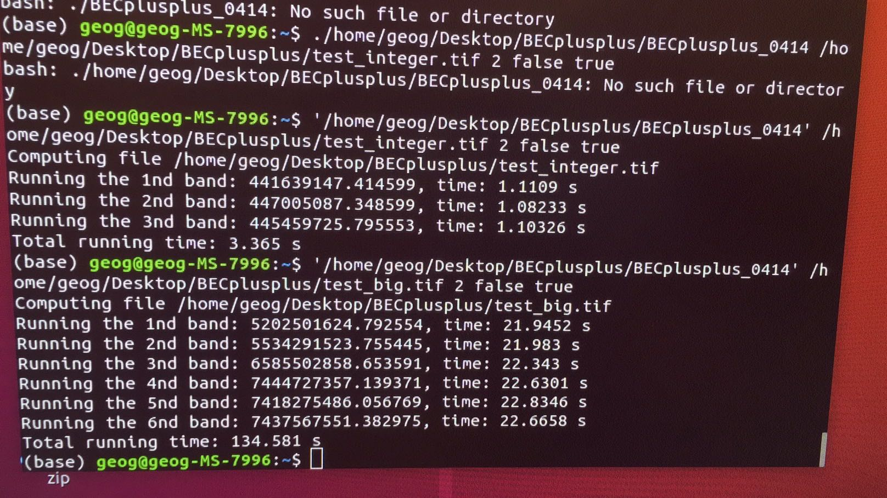

|
In order to write a book with my supervisor, I have moved to Chengdu and currently enrolled as a full-time research associate in Prof. Zhi-lin Li's lab at Southwest Jiaotong Univ, Chengdu. Before moving to Chengdu, I was a full-time Research Associate at Dept. of Land Surveying and Geo-Informatics LSGI, The Hong Kong Polytechnic University, where I worked on the development of statistical thermodynamics-based models & algorithms, with the focus on remote sensing image processing. At LSGI, I worked on HKSAR RGC GRF Project.I did my BSc in GIS at Nanjing Normal University and funded by the NSFC Projects. I did my master at the LSGI, The Hong Kong Polytechnic Univ. I was supvervised by Chair Prof. Zhilin LI and Dr. Yan Wai Yeung. |

Taken at Shek O, Hong Kong, on 18 April, 2022 |
Teaching is As Essential As Research
I, at LSGI, HKPU,try my best to improve my TA peformance. In my mind, in addition to conducting research meticulously, teaching enthusiasm should never be waning. Fortunately, I was a TA for a course LSGI3242A (Digital Terrain Modeling) in which, different from most TAs, I taught students to write an excellent report. I enjoy communicating with students, given that students are willing to improve their academic performance
The following are A+ reports and emails from students instructed by me
Key theoretic research topics
| Spatial-temporal Remote Sensing Image Fusion for Monitoring Phenology | How can we evaluate the fused fine-resolution imagery in practical applications (i.e., "Ground Truth" is unavailable)? |
|---|---|
| Modelling the land cover mapping from multispectral remote sensing imagery | The land cover and land Use mapping can be considered as a kind of irreversible thermodynamic process from numerical data to nominal raster data. |
| How to model the landscape pattern change in the ecological process? | Themodynamic laws and thermodynamic entropy (Boltzmann entropy) can help |
| How to model the information flow in the downscaling of remotely sensed data? | Multiscale information (both composition and configuration) can be well quantified by thermodynamic entropy (Boltzmann entropy). |
Current Research ProjectsModelling the Information Fusion in the Blending of the Landsat and MODIS Surface Reflectance via Thermodynamics

No-reference Assessment of Disaggregation of Land Surface Temperature via Thermodynamics

Development of Boltzmann-entropy-based approaches for remote sensing image analysis (HK RGC GRF)




I am communicating with Dr. Cushman who is a research scientist at USFS in order to complete projects about thermodynamics in landscape modelling Dr. Cushman published an article regarding Entropy in Landscape Ecology and the Potential of Thermodynamics. Python-based package for calculating Boltzmann entropy of numerical and nominal data organized in raster format is released. You can download it from here I have devloped a C++-based package (Right click to the see enlarged pictures) for calculating Boltzmann entropy of multisepctral imagery. The package can be used via either Python or C++. The codes will be released ASAP



The next-generation global land cover map: a multispectral LiDAR approach I'm interested in the development of thermodynamic entropy and thermodynamics-based methods for remotely sensed data analysis, especially land cover mapping, optical remote sensing image fusion, machine learning, and landscape pattern modelling. Much of my research is about inferring the information from remotely sensed data across different scales in space and time. I am also interested in developing novel machine learning models for remote sensing image analysis. |

|
Xinghua Cheng, Zhilin LI, Submitted to Landscale Ecology, 2021 project page / arXiv Applying ideas from statistcial thermodynamics to investiagte the mapping from multispectral remote sensing imagery. |

|
Sijin Li, Guanghui Hu, Xinghua Cheng, Liyang Xiong, Guoan Tang,Josef Strol Remote Sensing of Environment, 2021 project page PDF / arXiv By intergrating topographic knowledge into CGAN, we reconsturcted the Digital Elevation Model with the improvement on the Ridge and Valley. |

|
Xinghua Cheng, Zhi-lin LI Paper IEEE JSTARS 2021 Most state-of-the-art compression techniques utilize configurational information of images to achieve a higher and higher comression ratio. We use configurational entropy as a configurational information measure to build new models for predicting lossless compression ratio |

|
Xinghua Cheng, Yan Wei Yeung, Work, from 2021 to 2022 In Preparation project page / arXiv From the persperctive of information, we aim to develop a Boltzmann entropy-based index to quantify the quality of multispectral point clouds after correction and normalziation |

|
Xinghua Cheng, Zhilin LI, Ongoing Work, 2021-2022 project page / arXiv / Building a model for the information transmission from multispectral remote sensing imagery to land cover maps. |

|
Xinghua Cheng, Erjie Hu, Di Hu uploaded to arXiv, 2021 project page / arXiv With the structural description of a file by DFML, we can automatically generate file reading programs. |

|
Xinghua Cheng, Di Hu, uploaded to arXiv , 2021 project page / arXiv With the help of DFML, we can automatically acuquire the data formats of the input and output of geographical models. |

|
Xinghua Cheng,Zhilin Li This paper was accepted by a special issue origanized by Prof.Jianbo Gao, 2020 Thermodynamic entropy was employed to optimize the encryption of a DEM (i.e. a grayscale image). |

|
Xinghua Cheng,Zhilin Li This paper was submitted to IEEE GRS letters, 2021 We evaluated the performance of compression techniques based on three index (i.e. ability, validity, reliability) derived from Shannon's Coding Theorem. |

|
Di Hu Xinghua Cheng, Guonian Lv,Yongning Wen,Min Chen, In: Ye, X.Y, Lin, H. eds. Spatial Synthesis: Computational Social Science and Humanities. Switzerland: Springer Nature, pp. 13-17, 2021 |

|
Xinghua Cheng, Zhilin Li |
|
|
Xinghua Cheng, Zhilin Li ISPRS Congress, 2020
|
|
2020-2021
Xinghua Cheng
|

{kind=link}
{kind=link}
{kind=link}